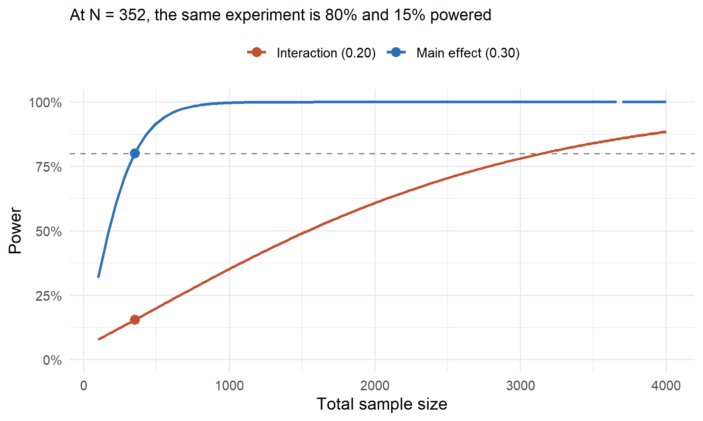

Every experiment ends with someone asking who the effect was strongest for. The power analysis that sized it answered a different question, so the honest reply is usually that the data cannot say. Power analysis for interaction effects is the calculation almost nobody runs, and skipping it does not merely cost you a finding. It manufactures fake ones.
Here is the whole problem in two numbers. Size a study for 80% power on the treatment effect, then ask that same study whether the effect differs between two segments.
## test truth power
## 1 main effect: does the treatment work 0.3 0.801
## 2 interaction: does it work differently by segment 0.2 0.155Same participants, same experiment. One test is a bet you win four times out of five. The other is a bet you lose more than five times out of six.
A standardized effect of 0.30 is an ordinary ambition for a marketing or behavioral
intervention. The pwr package sizes it in one line.
library(pwr)
d_main <- 0.30
pwr.t.test(d = d_main, power = 0.80, sig.level = 0.05)
##
## Two-sample t test power calculation
##
## n = 175.3847
## d = 0.3
## sig.level = 0.05
## power = 0.8
## alternative = two.sided
##
## NOTE: n is number in *each* groupn_arm <- ceiling(pwr.t.test(d = d_main, power = 0.80, sig.level = 0.05)$n)
N <- 2 * n_arm
c(n_per_arm = n_arm, N_total = N)
## n_per_arm N_total
## 176 352So 352 people. Now the interaction. Suppose the treatment genuinely works better for segment B than for segment A, with effects of 0.40 and 0.20. Their average is the 0.30 the study was built around, so the design is not wrong about the main effect. The interaction is the difference.
tau_A <- 0.20
tau_B <- 0.40
inter <- tau_B - tau_A
c(main_effect = (tau_A + tau_B) / 2, interaction = inter)
## main_effect interaction
## 0.3 0.2Rather than trusting a formula, run the study twenty thousand times and count.
set.seed(20260828)
sim_once <- function(N, tau_A, tau_B) {
seg <- rep(0:1, each = N / 2) # half the sample in each segment
trt <- rep(rep(0:1, each = N / 4), 2) # randomized within segment
y <- ifelse(seg == 1, tau_B, tau_A) * trt + rnorm(N)
summary(lm(y ~ trt * seg))$coefficients["trt:seg", c(1, 2, 4)]
}
mc <- as.data.frame(t(replicate(20000, sim_once(N, tau_A, tau_B))))
names(mc) <- c("est", "se", "p")
sig <- mc$p < 0.05
round(c(power = mean(sig), mean_SE = mean(mc$se)), 4)
## power mean_SE
## 0.1532 0.213115%, and the simulation agrees with the exact non-central t answer of 15.5% to within Monte Carlo error. The study that finds the treatment effect four times out of five finds the moderator less than one time in six.
The arithmetic is short enough to do by hand, and doing it once retires the simulation.
Write the four cell means as m[segment, arm]. The main effect is a difference of averages.
A = (m[A,1] + m[B,1])/2 - (m[A,0] + m[B,0])/2Each cell mean carries weight 1/2, so with n per cell the variance is
4 * (1/2)^2 * sigma^2/n, which is sigma^2/n. The interaction is a difference of differences.
I = (m[B,1] - m[B,0]) - (m[A,1] - m[A,0])Now every cell mean carries weight 1, so the variance is 4 * sigma^2/n, four times larger.
The standard error of an interaction is exactly twice the standard error of the main effect in the same experiment. That factor of two is structural. No amount of clean design removes it, because the interaction is assembled from four noisy quantities instead of two.
c(analytic_SE = 4 / sqrt(N), simulated_SE = mean(mc$se))
## analytic_SE simulated_SE
## 0.2132007 0.2130984Two things now work against you. The standard error is doubled, and the interaction is usually smaller than the main effect it modifies. Setting the two z-statistics equal gives the multiplier.
N_interaction / N_main = 4 * (main effect / interaction)^2mult <- function(main, inter) 4 * (main / inter)^2
z80 <- qnorm(0.975) + qnorm(0.80)
N_I <- (4 * z80 / inter)^2 # N for 80% power on the interaction
c(exact_N_needed = ceiling(N_I),
exact_ratio = round(N_I / N, 2),
formula_ratio = mult(d_main, inter))
## exact_N_needed exact_ratio formula_ratio
## 3140.00 8.92 9.00Nine times the sample for the same power, on the same question everyone asks at the end of the readout. The folklore number is 16, and this shows where 16 comes from. It is the special case where the interaction happens to be exactly half the main effect.
data.frame(
interaction_relative_to_main = c("equal", "three quarters", "half", "one third", "one quarter"),
multiplier = mult(1, c(1, 0.75, 0.5, 1/3, 0.25))
)
## interaction_relative_to_main multiplier
## 1 equal 4.000000
## 2 three quarters 7.111111
## 3 half 16.000000
## 4 one third 36.000000
## 5 one quarter 64.000000A moderator worth a quarter of the main effect costs 64 times the sample. That is not a study you resize. That is a study you redesign.

Figure 1: Power for the main effect and for the interaction, on the same participants.
Low power on its own is a wasted test. What makes an underpowered interaction actively harmful is what survives the significance filter. Look only at the runs that reached p < 0.05, the only ones anyone would write up.
round(c(
truth = inter,
mean_estimate_all = mean(abs(mc$est)),
mean_estimate_sig = mean(abs(mc$est[sig])),
exaggeration = mean(abs(mc$est[sig])) / inter,
wrong_sign_rate = mean(mc$est[sig] < 0)
), 3)
## truth mean_estimate_all mean_estimate_sig exaggeration
## 0.200 0.239 0.528 2.640
## wrong_sign_rate
## 0.014The true interaction is 0.20. Conditional on clearing significance, the average estimate is 0.53, an exaggeration of 2.6x. This is Type M error, the magnitude error, and it is a mathematical consequence of filtering noisy estimates on significance rather than a symptom of anything sloppy in the analysis.
That is what a published subgroup effect looks like when it comes out of a study sized for the main effect. Not absent. Inflated by enough to move a budget. The replication then returns a third of the size and gets called a failure to replicate, when the original was simply the tail of a distribution centered on something much smaller.
About 1.4% of the significant results also point the wrong way, which is small here only because the true interaction is not near zero.
The cheapest recovery is to stop dichotomizing. If the moderator is continuous (age, prior spend, engagement score) and you median-split it, you are discarding information for nothing.
set.seed(11)
zs <- replicate(3000, {
n <- 1500
Tr <- rbinom(n, 1, 0.5)
M <- rnorm(n)
y <- 0.30 * Tr + 0.20 * Tr * M + rnorm(n)
D <- as.integer(M > 0) # the median split
c(summary(lm(y ~ Tr * M))$coefficients["Tr:M", 3],
summary(lm(y ~ Tr * D))$coefficients["Tr:D", 3])
})
eff <- (mean(zs[2, ]) / mean(zs[1, ]))^2
round(c(relative_efficiency = eff,
theoretical_2_over_pi = 2 / pi,
extra_sample_needed = 1 / eff - 1), 3)
## relative_efficiency theoretical_2_over_pi extra_sample_needed
## 0.632 0.637 0.582The split retains 63% of the information, matching the theoretical 2/pi for a
normal moderator, so it costs about 58% more sample to reach the same
power. When you already need nine times the sample, handing another third to a median split is
the last thing you can afford.
The general tool is a simulation, because the closed form stops being convenient the moment the
design has clusters, unequal cells, or a non-normal outcome. This function extends to all of
those cases by editing the line that generates y.
power_interaction <- function(N, tau_A, tau_B, sigma = 1,
p_seg = 0.5, alpha = 0.05, R = 1500) {
mean(replicate(R, {
seg <- rbinom(N, 1, p_seg)
trt <- rbinom(N, 1, 0.5)
y <- ifelse(seg == 1, tau_B, tau_A) * trt + rnorm(N, sd = sigma)
summary(lm(y ~ trt * seg))$coefficients["trt:seg", 4] < alpha
}))
}
set.seed(7)
sapply(c(352, 1000, 3140), function(n) power_interaction(n, 0.20, 0.40))
## [1] 0.1493333 0.3653333 0.7980000The third value confirms that roughly 3,140 participants is where 80% power for this interaction actually lives. It lands just under 0.80 because this version randomizes segment membership rather than fixing the cell counts, which is the more honest model of real recruitment and costs a little precision.
4 * (main / interaction)^2 as the napkin check before anyone builds a simulation. It
tells you in seconds whether the answer is “add 30%” or “not with this budget.”The uncomfortable conclusion is that a large share of subgroup findings, in journals and in dashboards alike, come from studies sized for something else. The effect being real does not rescue the estimate, because the filter operates on the estimate rather than on the truth.
Interaction terms, how to interpret them once they are estimated, and what changes when the moderator is continuous are covered in the moderation chapter of A Guide on Data Analysis.